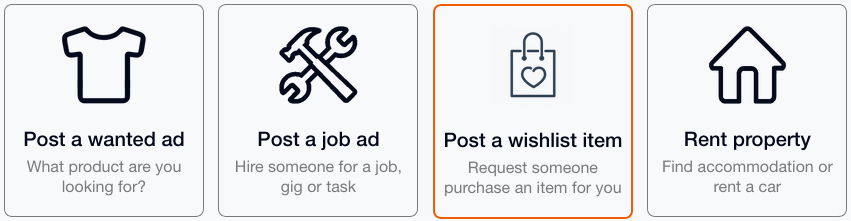

Developers
This page contains notes discussing how Wishlist integration with XMR Bazaar could work. It's recommended to read the Shop & Earn pages to view these notes in context.
- Listing Notes
- Create a Wishlist Category
- Auto-Accept Orders
- Wishlist Field
- Private Wishlists
- Calculate Wishlist Price
- Browsing Wishlist Items
- Reusable Wishlists
- Simplified Listing
- Order Notes
- Miscellaneous Notes
Listing Notes
Notes related to creating & editing listings.
Create a Wishlist Category
Wishlist listings will be processed & displayed differently than other listings. To accomodate this, create a wishlist category under the "Spend" type.
This new category will display under the "Earn XMR" menu as a "Purchase" (i.e. You're purchasing products & also purchasing Monero)
This new type of listing will contain additional fields for storing wishlist urls, fiat price, & discount(%).
Auto-Accept Orders
When a Buyer decides to "Make an Offer", the shopper needs to Accept or Decline the order. For Wishlist Listings, this is an unnecessary step.
The buyer should be able to view the listing, make an offer, purchase on Amazon, and post the order details all in one session. Then they only have to wait for items to ship.
XMR Bazaar could also remind the buyer to submit the tracking number when the item ships.
The shopper wouldn't have to do anything. They can check their listings and see that items have already been ordered (and don't need to Accept/Decline the order).
If the buyer, doesn't follow through, the items will still be available for purchase (on Amazon). The shopper can see this and would Reject this (auto-accepted) order, so another user can view/accept the listing.
Wishlist Field
Currently, the shopper has to provide the wishlist url in the listing description.
Storing the wishlist URL as it's own data field will provide more flexibility to display the url, and extract product information from the wishlist.
Private Wishlists
Wishlists are public on Amazon. This is how people can view each other's lists and purchase items.
Exposing the wishlist URL on XMR Bazaar could give Amazon the opportunity to scrape these unique URLs to match up XMR Bazaar users exchanging products for Monero.
Treating these URLs private on XMR Bazaar will help mitigate this possibility. i.e. Require users to login and accept an offer before viewing the wishlist URL.
XMR Bazaar could query Amazon for the item ID's to display products publicly without exposing the wishlist url.
Calculating Wishlist Price
This guide has the user calculating the fiat price of their wishlist.
XMR Bazaar would store the wishlist URL with the listing, and could use this URL to scrape Amazon for product IDs & prices.
An Amazon Product API exists, but I don't believe XMR Bazaar would qualify. API access may have been an issue for Purse.io. While there may be more maintenance keeping up with changes to Amazon's content changing, I believe scraping the Wishlist URL would be more "stealthy" and draw less suspicion.
Perhaps a bookmarklet or browser extension could be built to gather data from the user's browser/IP instead of the XMR Bazaar server.
Browsing Wishlists
From an buyers perspective, they only care about the fiat amount they will spend, and how much Monero they will receive. They're not concerned with the product.
For the Wishlist category. XMR Bazaar would sort listings by discount/fee and price instead of the standard gallery display. The item photo & details can be displayed once they find the amount they want to spend.
| Discount / Fee | Spend (USD) | Receive XMR (USD) | Rating | |
|---|---|---|---|---|
| 5% | $29.99 | 0.10348 ($28.49) | ⭐ 5 (12) | View |
| 5% | $43.66 | 0.15064 ($41.48) | ⭐ 4 (6) | View |
| 10% | $37.33 | 0.12202 ($33.61) | ⭐ 5 (3) | View |
| 10% | $49.99 | 0.16341 ($44.99) | ⭐ 4 (17) | View |
| 25% | $19.99 | 0.05445 ($14.99) | ⭐ 0 (0) | View |
| 30% | $104.57 | 0.26586 ($73.20) | ⭐ 3 (2) | View |
The Amazon fiat price & discount can be stored with the listing and calculate what is received based on the current Monero price.
If the shopper specifies a fixed Monero amount, then the discount will fluctuate based on the current XMR price.
Reusable Wishlists
Since Amazon wishlists can be re-used, and XMR Bazaar would be storing the wishlist URL with the listing...
The server would need to detect duplicate wishlist urls, then delete the url from any old listings. Since products likely will no longer match the old listing.
Simplified Listing
The Add Listing form can be simplified for wishlist listings.
Once they paste a wishlist URL, the description, images, & fiat price can be extracted from the wishlist.
The user would then select a discount rate for calculating the Monero price (upon acceptance).
(need a mockup here)
Order Notes
Notes related to XMR Bazaar orders.
Order Fields
Currently, wishlist order information is done via messages.
Give the buyer a way to submit the Amazon Order Number, Delivery date(s), and Tracking number(s).
A new order number/delivery date would change the order status to "Ordered".
A new tracking number would change the order status to "Shipped".
If they enter a valid delivery date, XMR Bazaar could calculate & display when to expect the item on the shopper's dashboard.
The tracking field could provide links to package tracking websites like AfterShip or Parcels
Amazon may split orders into multiple shipments. So XMR Bazaar would need to store multiple tracking numbers & delivery dates. Would need to research how multiple tracking numbers correlate to specific items in the order. i.e. What to do if only 1 of 2 packages are delivered. Which may require mediator intervention.
Order Status
The current order status goes from "Pending" to "Unpaid" once the order is accepted.
This suggests the shopper should pay immediately after accepting the order, which is incorrect.
Wishlist ordering would have different statuses. I believe this only requires one new status ("Ordered"). Below is a comparison of the existing order status' and how they would work for Wishlist orders.
| Wishlist Status | Description | XMR Bazaar Status |
|---|---|---|
| Active | New listing | Active |
| Accepted | Someone agreed to fulfill order | Pending |
| Ordered | Order Placed / Amazon # Submitted | |
| Shipped | Tracking Number Submitted | Shipped |
| Delivered | Awaiting Payment | Unpaid |
| Complete | Monero Paid / TX Submitted | Complete |
In this sequence, "Unpaid" doesn't happen until the end of the process. I prefer "Delivered" since the shipping company has delivered the package.
"Ordered", "Shipped", and "Delivered" statuses might be automatically detectable (i.e. Is it a valid Amazon order number?, Is it a valid tracking number?, Was the tracking number delivered?), but not critical if users can validate each other.
Detecting Purchases
Monitoring the Amazon wishlist for changes in "Needs" may be a way to detect if an item has been purchased and automatically switch to "Ordered" status.
This would likely require XMR Bazaar maintain a "copy" of the wishlist contents and quantities to compare with Amazon's information.
Possibly an "enhancement" after wishlist ordering is functional.
Tracking Bookmarklet
The bookmarklet is hosted on https://xmr-amzn.github.io/trackingBookmarklet.js, this is simple javascript to extract the Amazon Order ID and Tracking number from the Amazon Track Package page.
This would eventually be hosted on XMR Bazaar. It could be modified to POST this information directly to XMR Bazaar.
With the XMR Bazaar user already logged in (on another tab), the server would process the POST request from the bookmarklet, lookup the Amazon Order ID (previously provided by the buyer when they purchased the items), then import/update the Tracking number.
Tracking Orders
Once XMR Bazaar stores the tracking number(s), the server could periodically check shipping status and update the order status to "Delivered".
Miscellaneous Notes
More Notes...
Definitions
The "Shopper" is the person wanting to pay Monero for items on Amazon. They build their wishlist on Amazon and create an XMR Bazaar listing requesting someone purchase their items using fiat in exchange for Monero.
The "Earner" (or "Buyer") is the person who accepts the XMR Bazaar listing and purchases the Amazon items using fiat. When the items are delivered, they receive Monero from the Shopper.
International Orders
Amazon shopping operates in ~20 countries. I assume users will figure out if they're shopping on amazon.com, amazon.uk, or amazon.de. Wishlist URLs should include which TLD is being used. Monero pricing would need to be adjusted for each country (USD, GBP, or the Euro).
There would likely be slight differences to the Amazon web interface for each country (when it comes to using bookmarklets, or scraping info from wishlist urls).